무선설비산업기사 (2004-05-23 기출문제)
1과목: 디지털 전자회로
1. JK 플립플롭을 이용하여 D형 플립플롭을 만들려면?
- J의 입력을 인버터를 통해 K에 연결한다.
- J와 K를 동일 입력으로 한다.
- Q의 입력을 J에 궤환시킨다.
- K의 입력을 J에 궤환시킨다.
(정답률: 알수없음)

2. 다음 연산 증폭기에서 입출력 전압 관계식은?
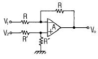
- Vo = V2-V1
- Vo = V1+V2
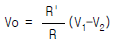
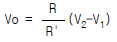
(정답률: 알수없음)
3. 트랜지스터의 스위칭 시간에서 turn - off 시간은?
- 하강시간
- 상승시간 + 지연시간
- 축적시간
- 축적시간 + 하강시간
(정답률: 알수없음)
4. 다음 Karnaugh map을 간략화 시킨 결과는?
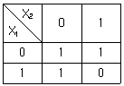
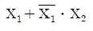
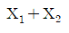
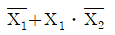
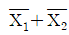
(정답률: 46%)
5. 다음 콜피츠 발진회로의 발진주파수는 몇[Hz]인가?
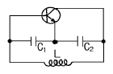
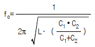
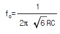
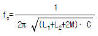
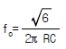
(정답률: 알수없음)
6. D형 Latch 회로의 주용도는?
- 2진 계수기
- 즉시 전시기
- 일시기억장치
- 정수연산장치
(정답률: 알수없음)
7. 진폭(AM)변조에서 반송파 주파수(fc)가 1000[㎑]이고 신호파 주파수(fs)가 1[㎑]일때 주파수 대역폭(B)은?
- 1[㎑]
- 2[㎑]
- 1000[㎑]
- 2000[㎑]
(정답률: 알수없음)
8. 레이스(race) 현상을 방지하기 위하여 사용되는 플립-플롭 회로는?
- JK 플립-플롭
- T 플립-플롭
- MS 플립-플롭
- D 플립-플롭
(정답률: 알수없음)
9. 다음의 FET에 대한 설명 중 틀린 것은?
- 입력임피던스가 크다.
- 다수캐리어에 의해서만 동작한다.
- 게이트의 전류에 의해서 드레인전류가 제어된다.
- 접합트랜지스터보다 잡음이 적다.
(정답률: 알수없음)
10. B급 푸시풀 전력 증폭기는 다음 어느 것을 제거 하는가?
- 기본파
- 우수 고조파
- 기수 고조파
- 모든 고조파
(정답률: 알수없음)
11. 2진수 1100을 그레이 코드 (gray code)로 바꾼 것은?
- 1000
- 1101
- 1010
- 1001
(정답률: 알수없음)
12. C급 증폭기의 특징이 아닌 것은?
- 효율이 높다.
- 출력단에 공진회로가 필요하다.
- 직선성이 좋다.
- 고출력용으로 많이 사용된다.
(정답률: 알수없음)
13. 그림과 같은 회로의 출력 논리식이 아닌 것은?
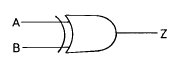
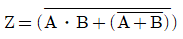
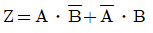
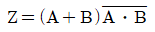
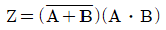
(정답률: 알수없음)
14. LC 동조 발진기에 비해 수정 발진기의 특징으로 잘못 설명한 것은?
- 안정도가 높다.
- Q가 비교적 크다.
- 발진 주파수를 가변 하기가 곤란하다.
- 저주파 발진기로 적합하다.
(정답률: 알수없음)
15. 동기식 카운터의 설명 중 옳은 것은?
- 리플 카운터라고도 한다.
- 플립-플롭의 단수와 동작 속도와는 무관하다.
- 전자계산기 회로에는 별로 사용되지 않는다.
- 전단의 출력이 후단의 트리거(trigger)입력이 된다.
(정답률: 알수없음)
16. 전력증폭기에서 B급 push-pull로 동작 시켰을 때 장점은?
- 출력 효율이 높고, 일그러짐이 적다.
- 높은 주파수를 증폭하는데 적당하다.
- 전압 이득을 크게 할 수 있다.
- 전도 지연 특성이 개선된다.
(정답률: 알수없음)
17. 논리식 A(A+B+C)를 간단히 하면 어느 값과 같은가?
- 1
- 0
- B+C
- A
(정답률: 알수없음)
18. 다음 중 주파수 변조방식의 특징이 아닌 것은?
- 전송로의 레벨 변동 및 잡음에 강하다.
- 평형 변조기를 사용한다.
- AFC회로가 필요하다.
- 변별기를 이용하여 복조한다.
(정답률: 알수없음)
19. 권선비가 1: 3인 전원 변압기를 통하여 실효치 200[V]의 교류입력이 전파 정류되면 평균치는 얼마인가?
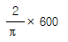
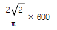
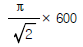
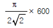
(정답률: 알수없음)
20. 슈미트 트리거(Schmitt trigger) 회로의 용도 설명 중 틀린 것은?
- 구형파 펄스 발생회로로 사용된다.
- 임의의 파형에서 그 크기에 해당하는 펄스폭의 구형파를 얻기 위해서 사용된다.
- A - D 변환회로로 사용된다.
- D - A 변환회로로 사용된다.
(정답률: 70%)
2과목: 무선통신 기기
21. 이동통신용 수신 전파신호를 측정할 경우 필요한 측정장비가 아닌 것은?
- 스펙트럼 아날라이져
- GPS(Global Positioning System)
- LNA(Low Noise Amplifier)
- RF 전력측정기
(정답률: 알수없음)
22. FM 복조에 PLL 회로가 많이 사용되고 있다. 다음 중 PLL의 기본적인 구성 요소가 아닌 것은?
- 전압제어발진기(VCO) 회로
- 위상 비교기(PC) 회로
- 샘플링(sampling) 회로
- 저역통과필터(LPF) 회로
(정답률: 알수없음)
23. 위성통신에 사용되는 주파수는 ㎓ 대의 매우 높은 주파수이다. 위성에서 수신한 ㎓ 대의 주파수를 신호처리를 위해 먼저 낮은 주파수로 변환하는데, 이 변환이 이루어지는 수신측의 장치는?
- 디 멀티프렉서(Demultiplexer)
- 다이프렉서(Diplexer)
- 다운 컨버터(Down converter)
- 저잡음 증폭기(LNA)
(정답률: 80%)
24. 전력변환장치를 크게 분류하면?
- 인코더(encoder)와 디코더(decoder)
- 인버터(inverter)와 컨버터(converter)
- 정류기(rectifier)와 발전기(generator)
- 계전기(relay)와 발진기(oscillator)
(정답률: 알수없음)
25. 정류기의 평활 회로에 이용하는 여파기로 가장 적당한 것은?
- 고역 여파기
- 저역 여파기
- 대역 여파기
- 대역 소거 여파기
(정답률: 알수없음)
26. 단파 AM 수신기의 감도를 향상시키는 방법으로 적합치 않은 것은?
- 초단 증폭기에는 내부잡음이 적은 증폭소자를 사용한다.
- Tracking 조정에 오차가 없도록 가변미세 조정 콘덴서를 사용한다.
- 공중선 및 그 결합 회로와 각 증폭부 등의 이득이 충분해야 한다.
- 중간 주파증폭기의 대역폭을 가급적 넓게하는 것이 좋다.
(정답률: 알수없음)
27. 위성중계기에서 대전력증폭기로 사용되는 것은?
- TWTA
- MAGNETRON
- IMPATT DIODE
- GaAs MESFET
(정답률: 알수없음)
28. 2슬롯 TDMA(시분할 다원접속) 방식으로 다음신호를 전송할때 변조하기전 송신되는 신호형태로 옳은 것은? (가입자1이 전송하려는 정보 :아버지, 가입자2가 전송하려는 정보:어머니)
- 아버지어머니
- 아어버머지니
- 니머어지버아
- 섞이기 때문에 알 수 없다.
(정답률: 알수없음)
29. 검파기의 부하회로에서 소자의 시정수의 부적합으로 인하여 발생되는 파형왜곡은?
- Q curve clipping
- negative peak clipping
- positive peak clipping
- diagonal clipping
(정답률: 알수없음)
30. FM 변조시 높은 주파수 성분을 강조하여 신호대 잡음비를 개선하기 위해서 사용하는 회로는?
- Pre-emphasis 회로
- De-emphasis 회로
- Discriminator 회로
- Squelch 회로
(정답률: 알수없음)
31. DSB 통신방식과 비교하여 SSB 통신방식의 결점이 아닌것은?
- 송수신기의 회로 구성이 복잡하다.
- 높은 주파수 안정도가 요구된다.
- 가격이 비싸다.
- 잡음이 많다.
(정답률: 알수없음)
32. 수신기의 종합특성을 결정해주는 요소와 관계가 먼 것은?
- 감도
- 충실도
- 명료도
- 안정도
(정답률: 알수없음)
33. 통신 위성체 구성부 중 텔레메트리 기능에 해당하지 않는 것은?
- 위성추진시스템의 가스 압력값
- 열제어 시스템에서의 온도감지의 출력값
- 명령에 대한 데이터 확인
- 주파수 변환
(정답률: 알수없음)
34. 송신기의 부속 장치와 관계가 먼 것은?
- 냉각장치
- 제어장치
- 감시장치
- 변조장치
(정답률: 알수없음)
35. 진폭 변조 송신기 출력이 100[%] 변조시에 150[W]였다면 80[%]변조시에는 얼마인가?
- 164[W]
- 100[W]
- 132[W]
- 180[W]
(정답률: 알수없음)
36. 어떤 증폭기의 증폭도가 200일때 왜율이 4[%]이다. 귀환율 β = 0.04의 부귀환을 걸때 왜율은 얼마인가?
- 0.044[%]
- 0.44[%]
- 0.57[%]
- 0.⑤7[%]
(정답률: 60%)
37. 이동전화망의 교환국에 시설되는 VLR(Visitor Location Register)및 HLR(Home Location Register)의 기능과 가장 밀접한 관계가 있는 것은?
- 로밍 (Roaming)
- 핸드오프 (Hand-off)
- 자동전력제어(APC)
- 스크램블(Scramble)
(정답률: 알수없음)
38. 80[MHz]의 반송파를 최대 주파수 편이 60[kHz]로 하고 10[kHz] 신호파로 FM 변조했을 경우의 변조 지수는 얼마인가?
- 6
- 8
- 10
- 12
(정답률: 알수없음)
39. 위상 피변조파로부터 진폭 피변조파를 만드는 가변위상변조 방식은?
- Doherty 변조회로
- Serrasoid 변조회로
- Chirex 변조회로
- Armstrong 변조회로
(정답률: 알수없음)
40. 수신기 감도(Sensitivity)를 향상시키는 방법에 대해 잘못 설명된 것은?
- 고주파 증폭부는 내부잡음이 적은 소자를 사용한다.
- 고주파 동조회로 Q를 크게 한다.
- IF 대역폭을 가능한 넓게 취한다.
- 내부 잡음이 적은 주파수 변환기를 사용한다.
(정답률: 알수없음)
3과목: 안테나 개론
41. 길이가 λ/4인 수직 접지 안테나가 공진하고 있을 경우의 실효 높이를 나타내는 식은?
- λ/π
- λ/2π
- λ/2√π
- 2π λ
(정답률: 알수없음)
42. 급전선과 안테나 간에 정합하는 이유중 옳지 않은 것은?
- 최대 전력을 전송한다.
- 급전선의 손실증가를 막는다.
- 정재파비를 크게 한다.
- 부정합 손실을 적게 한다.
(정답률: 알수없음)
43. 전파의 성질중 잘못 설명된 것은?
- 동위상인 경우에는 합성되고 역위상인 경우에는 상쇄 된다.
- 타원편파나 원편파는 구면파를 말한다.
- 도전성(導電性)을 가진 매질 내에서는 감쇠가 크다.
- 굴절율이 다른 매질의 경계면에서 굴절, 반사한다.
(정답률: 알수없음)
44. 등가지구 반경계수의 설명 중 틀린 것은?
- 전파 투시도를 그릴때 편리하다.
- 온대지방에서 그 값이 4/3을 택한다.
- 전파 가시거리를 생각할 때 만곡한 전파로를 직선으로 간주한다.
- 기하학적 가시거리를 구할 때 사용한다.
(정답률: 알수없음)
45. 특성임피던스 600[Ω] 및 150[Ω]의 선로를 임피던스 변성기로 정합시키고자 한다. 파장이 λ 일 때 삽입해야 할선로의 특성임피던스와 길이는?
- 75[Ω],λ/2
- 300[Ω],λ/3
- 300[Ω],λ/4
- 377[Ω],λ/4
(정답률: 알수없음)
46. λ/4수직접지 안테나의 수직면내 지향 특성은?
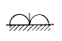
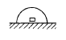
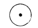
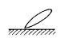
(정답률: 알수없음)
47. 다음 중 VHF대 이상에서의 fading에 해당되지 않은 것은?
- 산란형 페이딩
- 신틸레이션 페이딩
- 도약성 페이딩
- duct형 페이딩
(정답률: 알수없음)
48. 혼 안테나(horn antenna)는 도파관의 한쪽을 나팔형으로 확장하여 만들고 있다. 그 이유로 가장 타당한 것은?
- 도파관과 자유공간의 임피던스정합을 위하여
- 제작을 용이하게 하기 위하여
- 정재파 안테나로 만들기 위하여
- 관내전파를 TE파로 변환시켜 원거리통신을 위하여
(정답률: 알수없음)
49. 파라볼라 안테나(parabola antenna)의 특징으로 잘못된것은?
- 비교적 소형이고 구조가 간단하다.
- 지향성이 예리하고 이득이 높다.
- 부엽(side lobe)이 비교적 많다.
- 광대역 임피던스 정합이 쉽다.
(정답률: 알수없음)
50. 정재파비(S.W.R) = 1일 때 도선에는 어떤 성분의 파가 실리게 되는가?
- 정재파
- 반사파
- 진행파
- 원편파
(정답률: 알수없음)
51. 반파장 안테나의 주파수가 30㎒ 일때 안테나의 실효 길이는 대략 얼마인가?
- 2.8[m]
- 3.2[m]
- 3.5[m]
- 3.6[m]
(정답률: 알수없음)
52. 대류권 산란파의 특징이 아닌 것은?
- 기본 전파손실은 300㎞에서 약 180-220[㏈]이다.
- 산란영역이 너무 크면 전파왜곡이 발생한다.
- 적당한 주파수는 200-5000㎑이다.
- 지리적 조건의 영향을 받지 않는다.
(정답률: 알수없음)
53. 롬빅 안테나의 특징중 틀린 것은?
- 진행파형으로 광대역성이다.
- 단일 방향의 예리한 지향특성을 갖는다.
- 수평편파 성분이 주로 사용된다.
- 넓은 설치장소가 필요하므로 효율이 좋다.
(정답률: 알수없음)
54. 다음중 톱 로오딩(top loading)의 효과는?
- 고유주파수의 증가
- 실효길이의 감소
- 복사저항의 감소
- 복사효율의 증가
(정답률: 알수없음)
55. 루프(loop)안테나에 관한 설명으로 옳지 못한 것은?
- 실효길이는 권수에 비례하고 파장에 반비례한다.
- 루프 안테나의 수평면내 지향특성은 8자형이다.
- 전파도래 방향과 루프면이 일치할 때 최대 감도이다.
- 급전선과 정합이 쉬워 효율이 좋다.
(정답률: 알수없음)
56. 복사저항 20[Ω], 손실저항 5[Ω]인 안테나에 100[W]의 전력이 공급되고 있을 때의 복사 전력은 얼마인가?
- 80[W]
- 90[W]
- 100[W]
- 110[W]
(정답률: 알수없음)
57. 어느 송·수신소 사이의 MUF(maximum usable frequency)가 10[㎒]일때 FOT(frequency of optimum transmission)는 얼마인가?
- 5[㎒]
- 6.5[㎒]
- 7.5[㎒]
- 8.5[㎒]
(정답률: 알수없음)
58. 다음중 지표파와 E층 반사파의 간섭에 의해 양청구역이 제한되는 방송파는?
- 중파
- 단파
- 초단파
- 마이크로파
(정답률: 알수없음)
59. 급전선에 관한 설명중 옳지 않은 것은?
- 특성임피이던스는 주파수와 관계가 없다.
- 동축급전선이 평행 2선식 보다 특성임피이던스가 적다.
- 평행 2선식이 동축급전선보다 단위 길이당 손실이 더 크다.
- 길이에 따라 특성임피이던스가 달라진다.
(정답률: 알수없음)
60. 안테나의 m-A(meter-Ampere)에 대한 설명중 틀린 것은?
- 안테나의 실효고와 기저부 전류의 곱이다.
- 안테나의 복사 능력을 나타낸다.
- 수신 전계 강도는 m-A에 반비례한다.
- 안테나의 복사 전력은 m-A의 자승에 비례한다.
(정답률: 알수없음)
4과목: 전자계산기 일반 및 무선설비기준
61. 항공이동업무에 있어서 통신의 우선 순위 중 가장 우선인 것은?
- 긴급통신
- 조난통신
- 무선방향 탐지에 관한 통신
- 항공의 안전 운항에 관한 통신
(정답률: 59%)
62. 다음 연산자를 혼합하여 연산할 때 연산 순서를 가장 옳게 표시한 것은?
- 산술식 → 관계식 → 논리식
- 산술식 → 논리식 → 관계식
- 관계식 → 산술식 → 논리식
- 관계식 → 논리식 → 산술식
(정답률: 알수없음)
63. 송신설비의 공중선전력을 규격전력(PR)으로 표시하는 무선국은?
- 실험국
- 간이무선국
- 항공이동업무국
- 항공무선항행업무국
(정답률: 알수없음)
64. 어큐뮬레이터의 설명 중 가장 타당한 것은?
- 명령 시행 결과를 감시하는 장소
- 연산 결과를 일시적 기억하는 장소
- 명령의 순서를 기억하는 장소
- 명령어를 해독하는 장소
(정답률: 알수없음)
65. 다음중 점유주파수대폭이 가장 큰 것은?
- 코드없는 전화기
- 개인휴대통신용 무선설비
- 생활무선국용 무선설비
- 초단파방송 설비
(정답률: 46%)
66. 컴퓨터 시스템에서 기억 용량이 4,096바이트를 가진 기억장치에서는 몇 비트의 번지 필드(address field)가 필요한가?
- 10bit
- 11bit
- 12bit
- 13bit
(정답률: 알수없음)
67. 현재 명령어의 오퍼랜드 내용과 프로그램 카운터의 내용을 더하여 유효주소를 결정하는 주소 지정 방식은?
- 베이스 레지스터 주소 지정 방식
- 상대 주소 지정 방식
- 인덱스 주소 지정 방식
- 변위 주소 지정 방식
(정답률: 알수없음)
68. 주기억장치의 메모리 용량보다 큰 프로그램을 사용 할 수 있는 메모리 이용 기법은?
- Cache Memory
- Associative Memory
- Segment Memory
- Virtual Memory
(정답률: 알수없음)
69. 4가지 조건이 동시에 만족되면 교착 상태가 발생된다. 이 조건이 아닌 것은?
- 상호 배제(mutual exclusion)
- 점유와 대기(hold and wait)
- 선점(preemption)
- 환상형 대기(circular wait)
(정답률: 알수없음)
70. ASCII 코드에서 문자 표시는 몇 비트 (bit)로 구성되어 있는가? (단, Parity Bit는 제외)
- 5
- 6
- 7
- 8
(정답률: 알수없음)
71. 부동소수점 수가 기억장치내에 있을 때 비트를 필요로 하지 않는 것은?
- 소수점
- 부호
- 소수
- 지수
(정답률: 알수없음)
72. 다음 중 정보통신기기 인증규칙에서 인증표시가 적합하지 않는 것은?
- 전기통신기본법의 규정에 의한 형식승인표시
- 전파법의 규정에 의한 형식검정 합격표시
- 전기통신기본법의 규정에 의한 형식면제표시
- 전파법의 규정에 의한 전자파적합등록표장
(정답률: 알수없음)
73. 변조신호에 의하여 반송파가 진폭변조되는 송신장치는 변조도가 몇 퍼센트(%)를 초과하지 아니하여야 하는가?
- 75%
- 85%
- 90%
- 100%
(정답률: 알수없음)
74. 공중선계의 충족 조건이 아닌 것은?
- 정합이 충분할 것.
- 만족스런 지향성을 얻을 것.
- 혼변조 전력의 발사가 용이할 것.
- 공중선 이득이 높고 능률이 좋을 것.
(정답률: 알수없음)
75. 컴퓨터의 연산은 사용되는 자료의 수에 따라 Unary 연산과 Binary 연산으로 구분한다. 이때 Binary 연산은 어느것인가?
- AND
- ROTATE
- SHIFT
- COMPLEMENT
(정답률: 알수없음)
76. 전파의 형식표시 중 등급의 기호가 맞지 않는 것은?
- 첫째 기호는 주반송파의 변조형식
- 둘째 기호는 주반송파를 변조시키는 신호의 특성
- 셋째 기호는 송신할 정보의 형태
- 넷째 기호는 다중화특성
(정답률: 알수없음)
77. 특정한 주파수의 용도를 정하는 것은?
- 주파수 분배
- 주파수 할당
- 주파수 지정
- 주파수 사용
(정답률: 알수없음)
78. 다음 중 통신보안의 목적에 해당하지 않는 것은?
- 정보획득량의 최소화
- 획득하려는 정보의 지연화
- 정보통신량의 적절한 제어
- 비밀누설가능성의 사전제거
(정답률: 알수없음)
79. 정보통신기기의 형식등록이 면제되는 경우가 아닌 것은?
- 시험, 연구를 위하여 제조하는 경우
- 전시회 행사 중에 판매가 목적인 경우
- 외국으로부터 도입하는 선박에 설치된 경우
- 외국기술자가 국내산업체 등의 필요에 의하여 일정기간 내 반출하는 조건으로 반입하는 경우
(정답률: 알수없음)
80. 2개 이상의 프로그램을 1대의 컴퓨터로 병행 처리 하는 방법을 무엇이라고 하는가?
- 온-라인 즉시처리
- 다중 프로그래밍
- 시 분할처리
- 순서처리
(정답률: 알수없음)